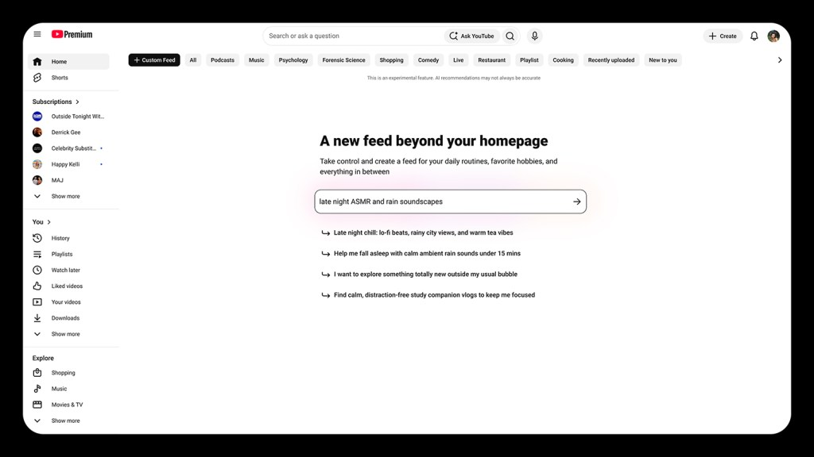

Executive Summary
유튜브가 2026년 9월 23일 커스텀 피드를 공개했다. 보고 싶은 영상을 문장으로 적으면 제미나이가 그 조건에 맞는 영상만 모아 홈 화면에 탭 하나를 따로 세워 준다. 다음 달부터 웹과 모바일에 차례로 들어간다. 이 글은 이 기능을 새 기능 소식이 아니라 추천이 쓰는 선호 데이터의 출처가 하나 늘어난 사건으로 본다.
같은 실험이 전에 한 번 있었다. 넷플릭스는 2017년 별 다섯 개짜리 평점을 엄지 두 개로 바꾸면서, 사람에게 묻는 눈금을 다섯에서 둘로 줄였다. 그때 제품 담당 부사장이 기자들에게 던진 물음이 남아 있다. 다큐멘터리에 별 다섯을 주겠다는 말과 코미디 영화를 열 배 더 자주 보겠다는 행동, 어느 쪽이 더 센 신호인가. 스무 명을 면담한 2026년 뉴스 소비 연구도 같은 어긋남을 기록했다. 참가자들은 믿을 만한 정보가 중요하다고 답했지만, 실제로 누른 것은 신뢰도가 낮은 매체의 글이었다.
그러면 두 신호가 갈릴 때 유튜브는 어느 쪽을 믿을까. 판정을 미뤘다. 새 탭은 홈 화면 맨 위에 붙고, 원래 추천 화면은 그 옆에 그대로 남는다. 1절부터 4절까지는 발표문과 공개된 연구에 남은 것을 따라가고, 이 선택을 회사 데이터의 문제로 옮겨 읽는 5절은 이 글의 해석이다.
주요 수치
출처: TechCrunch 보도(2026-09-23), 넷플릭스 발표(2017-03-16), PEBOL 논문(RecSys 2024).
200억+
유튜브에 쌓인 영상
발표에서 기능의 근거로 든 규모다. 이만한 창고 앞에서는 눌러 본 기록만으로 오늘 볼 것을 추려 내기 어렵다
200%
별점을 엄지로 바꾼 뒤 늘어난 평가 수
넷플릭스가 2016년 시험에서 얻은 값이다. 사람이 말로 남기는 신호는 정확한지를 다투기 전에 모이는 양에서 먼저 밀렸다
0.27
대화 열 번으로 좁힌 추천 적중도
PEBOL 연구의 MRR@10 값이다. 단일 LLM 방식은 같은 조건에서 0.17이었다. 말로 받은 선호도 다루는 방법이 있으면 좁혀진다
2개
유튜브 홈에 남은 피드
문장으로 만든 탭을 새로 붙이면서 행동으로 만든 피드를 없애지 않았다. 판정을 미루는 것이 이번 설계의 답이다
문장으로 주문받는 추천 탭
유튜브가 커스텀 피드를 내놓은 무대는 9월 23일 연례 행사 '메이드 온 유튜브'였다. 쓰는 법은 단순하다. 보고 싶은 영상을 설명하는 문장을 적으면, 제미나이가 그 문장을 읽고 조건에 맞는 영상을 모아 홈 화면 맨 위에 별도 탭으로 고정해 준다. 발표에 실린 예시는 "30분 기차 통근길에 볼 영상 팟캐스트", "마음을 풀어 줄 잔잔한 해설 영상" 같은 것들이다. 문장 길이에 제한이 없어서 무엇을 넣고 무엇을 뺄지, 어느 것을 앞세울지까지 적어 넣을 수 있다. 적용은 다음 달부터 웹과 모바일에 차례로 이뤄진다.

눈여겨볼 대목은 이 탭이 들어서는 자리다. 커스텀 피드는 원래의 추천 피드를 밀어내지 않는다. 홈 화면을 열면 두 피드가 탭으로 나란히 서 있고, 지금 무엇을 하고 싶은지에 따라 골라 들어가면 된다. 기존 추천을 끄거나 바꾸는 장치라는 서술은 발표 어디에도 없다. "나만의 알고리즘을 만든다"는 표현이 기사 제목으로 붙었지만, 실제로 만들어지는 것은 알고리즘이 아니라 탭이다. 그 탭도 하나로 끝나지 않는다. 회사가 다음 달부터 연다고 밝힌 것은 커스텀 피드를 여러 개 만드는 기능이다.
시청자 AI 제품 관리 부사장 에밀리 목슬리가 이 기능을 소개하며 든 근거는 규모였다. "유튜브에 있다는 것의 놀라운 점 하나는 세상이 늘 손끝에 있다는 것이다. 유튜브 말뭉치에는 200억 개가 넘는 영상이 있어서, 언제나 검색 한 번이면 주제의 보물창고에 닿는다." 200억이라는 숫자가 기능의 필요를 그대로 설명한다. 창고가 그만큼 크면 사람이 무엇을 눌렀는지만 보고 오늘 볼 것을 좁히기가 어려워진다.
유튜브가 이 길을 처음 낸 것도 아니다. 기사 스스로 이번 발표를 블루스카이가 연 흐름을 따라가는 것으로 규정한다. 블루스카이는 2023년부터 사용자가 직접 만드는 피드를 열어 뒀고 2026년에는 AI 도구를 붙였다. 메타의 스레드는 2025년 공개 커스텀 피드를, 인스타그램은 같은 해 친구와 취향을 섞는 블렌드를 내놓았다. X는 2026년 AI 기반 커스텀 피드를, 스포티파이는 같은 해 취향 프로필을 열었다. 유튜브는 가장 큰 창고에 이 방식을 들였을 뿐 처음 시도한 회사가 아니다.
같은 날 유튜브는 만드는 쪽에도 AI 묶음을 내놓았다. 스튜디오 앱 안에서 공개 전 초안에 피드백을 주고, 제목과 썸네일을 자동으로 지어 주고, 썸네일 세 안을 돌려 가며 시험해 자동으로 갈아 끼우는 기능들이다. 회사가 함께 공개한 수치가 있다. 크리에이터들이 제목과 썸네일을 놓고 돌린 A/B 시험이 4천만 회를 넘었다. 한쪽에서는 시청자에게 취향을 말해 달라고 하고, 다른 쪽에서는 무엇이 실제로 눌리는지를 4천만 번 시험한다. 두 발표는 별개 트랙이지만 같은 날 같은 무대에 올랐다.
별점은 왜 사라졌나
추천이 사람의 말을 안 들어 본 것은 아니다. 한 번 크게 들어 봤고, 그 결과로 듣기를 줄였다.
2017년 3월 16일 넷플릭스는 별 다섯 개짜리 평점을 없애고 엄지 두 개로 바꿨다. 회사가 공식으로 든 이유는 두 가지였다. 하나는 사람들이 별점을 오해했다는 것이다. 화면에 뜬 별의 개수를 모든 회원의 평균으로 읽었지만, 실제로는 그 사람의 시청 기록으로 뽑은 예측값이었다. 다른 하나는 모이는 양이다. 수십만 명을 대상으로 한 2016년 시험에서 엄지 방식은 별점보다 평가를 200% 더 받아 냈다. 다섯 칸 중 하나를 고르는 일이 생각을 너무 많이 요구했던 것이다.

기자 브리핑에서 제품 담당 부사장 토드 옐린이 덧붙인 말이 이 글의 주제와 정확히 겹친다.
"어느 쪽이 더 센 신호일까요. 우크라이나 사태를 다룬 다큐멘터리에 별 다섯을 주겠다고, 최신 애덤 샌들러 영화에는 별 셋을 주겠다고 말해 주는 것과, 애덤 샌들러 영화를 열 배 더 자주 보겠다는 것 중에서." 같은 자리에서 옐린은 "별 다섯 개는 이제 아주 옛날 얘기처럼 느껴진다"고도 했다.
별점이 물은 것은 작품의 값어치에 대한 판단이었고, 회사가 알고 싶었던 것은 오늘 밤 무엇을 틀지였다. 두 질문의 답이 갈리자 업계는 답이 갈리지 않는 신호를 택했다. 누른 것, 끝까지 본 것, 다시 찾은 것은 따로 해석할 필요가 없다. 그 뒤로 십 년 가까이 추천의 기본 재료는 행동 기록이었고, 사람이 직접 적어 넣는 선호는 가입 첫 화면에서 장르 몇 개를 고르는 정도로 남았다.
조너선 스트레이와 공저자들은 이 전환을 조금 더 건조하게 적었다. 항목 하나하나를 붙들고 선호를 묻는 방식은 물어볼 수 있는 항목이 한정되고, 물을수록 생각할 거리가 늘고, 평가한 항목 밖으로는 답을 넓히기 어렵다.
그러니 별점이 밀린 이유는 사람의 말이 거짓이어서가 아니다. 다섯 칸짜리 눈금이 담을 수 있는 말이 너무 적었다고 보는 편이 정확하다. 별 셋이 "괜찮았지만 다시 보지는 않겠다"인지 "피곤한 날에만 좋다"인지 눈금은 구분하지 못한다. 유튜브가 지금 내놓은 입력 칸은 그 눈금보다 훨씬 넓다. 그래서 같은 실험이 다시 걸린 셈이고, 조건 하나가 달라졌다.
말한 취향과 실제로 누른 것 사이의 거리
그렇다면 사람이 말로 적은 선호는 얼마나 믿을 만한가. 2026년에 나온 연구 하나가 이 물음을 정면으로 다룬다. 김도원·코디 번테인·조반니 루카 참파글리아가 쓴 「뉴스 큐레이션에서 진술 선호와 현시 선호의 간격 이해하기」는 젊은 성인 소셜미디어 사용자를 상대로 설문과 면담을 하고, 직접 피드를 꾸미게 해 두 선호를 나란히 놓았다.
참가자는 미국에 사는 18세에서 24세 사이 이용자이고, 논문의 모든 수치가 면담까지 마친 스무 명에게서 나온다. 말한 선호는 게시물 여덟 개에 동전 열 개를 나눠 놓게 해서 쟀고, 실제 선호는 같은 화면을 1분 동안 훑게 하고 무엇을 눌렀는지로 쟀다. 질은 뉴스가드가 매긴 매체 신뢰도 등급으로 갈랐다. 두 선호가 어긋나지 않은 네 명은 애초에 걸러 냈는데, 어긋남이 있느냐는 선행 연구가 이미 확인한 물음이라 이 연구의 관심이 아니라는 이유였다. 저자들 스스로도 결과를 젊은 성인 바깥으로 넓힐 수는 없다고 밝힌다.
결과의 방향은 분명했다. 참가자들은 질 높은 정보를 중요하게 여긴다고 답했지만 실제로는 질 낮은 콘텐츠에 관여했다. 그런데 가상의 인물을 위해 이상적인 뉴스 피드를 설계해 보라고 하자, 참가자들은 정확성과 다양성을 앞세우면서 그 인물의 인간관계와 처지까지 함께 고려했다. 연구진은 피드를 꾸미는 일이 혼자만의 취향 표현이 아니라 "공유된 정보 공간에서 무엇이 보일 만하고 적절한지를 판단하는, 사회적으로 자리 잡힌 과정"이라고 정리했다.
연구진은 거리의 크기도 쟀다. 참가자가 직접 꾸린 피드와 참여를 최대로 끌어올리는 피드의 순위가 얼마나 겹치는지를 보고, 같은 창고에서 무작위로 뽑아 만든 피드와도 견줬다. 참가자가 꾸린 피드가 참여 최대화 피드에서 더 멀었다. 무작위로 고른 것보다도 멀었다. 두 출처가 비슷한 답을 조금 다르게 내놓는 것이 아니라 아예 다른 것을 고른다는 뜻이다. 흔히 걱정하는 한 가지는 확인되지 않았다. 말한 대로 꾸리게 두면 듣고 싶은 소리만 남을 것이라는 예상과 달리, 직접 꾸린 피드가 반대편 시각을 보여 준 정도는 참여 최대화 피드와 비슷했다.
이 결론이 유튜브의 새 입력창에 그대로 걸린다. 빈칸에 문장을 적는 순간 사람은 혼자가 아니다. 적히는 것은 오늘 밤 당장 누르고 싶은 것보다, 내가 그런 것을 보는 사람이라고 여기고 싶은 쪽에 가깝다. 다큐멘터리를 넣어 달라고 적어 두고 저녁마다 짧은 예능을 누르는 일은 거짓말이 아니다. 두 가지가 각각 다른 질문의 답일 뿐이다. 하나는 어떤 사람이 되고 싶은지에 답하고, 다른 하나는 오늘 밤 삼십 분을 어떻게 쓸지에 답한다.
그렇다고 저자들이 적어 둔 말을 깎아서 들으라고 하지는 않는다. 진짜 선호는 끝내 알아낼 수 없을지 모른다고 인정하면서도, 생각할 시간을 주고 받은 진술이 스쳐 지나간 행동보다는 가까운 대리값이라고 본다. 참가자들이 거리를 설명한 방식도 자기 탓이 아니었다. 자극적인 것이 더 눌리고 그래야 플랫폼에 돈이 된다는 것이었다. 논문은 이 대목을 받아, 참여 지표가 살아남은 이유는 그것이 이용자의 가치를 담아서가 아니라 플랫폼의 유인에 맞아서라고 정리한다.
추천을 만드는 쪽에서 보면 이 거리는 골칫거리다. 적어 둔 문장대로만 채우면 사용자는 며칠 만에 그 탭을 열지 않게 되고, 행동 기록대로만 채우면 문장을 적게 한 이유가 사라진다. 어느 쪽으로도 완전히 기울 수 없다는 것이 이 기능의 출발 조건이다.
유튜브는 어느 쪽도 고르지 않았다
유튜브는 한쪽을 버리는 대신 둘을 나란히 뒀다. 커스텀 피드는 별도 탭으로 서고, 원래 피드는 원래 자리에 남는다. 두 신호를 한 모델 안에서 저울질해 섞는 대신, 갈라 놓고 사용자에게 고르게 한다. 그리고 그 고르는 행위 자체가 새 신호가 된다. 커스텀 탭을 눌러 들어가는 순간 사용자는 "지금은 적어 둔 대로 보고 싶다"고 말한 셈이 되고, 원래 피드에 머무르면 그 반대다. 유튜브 앱을 열면 지금 목적에 가장 맞는 피드로 곧장 들어갈 수 있게 된다고 보도가 짚은 대목이 이 구조다. 어느 쪽이 참인지 판정하지 않고, 어느 쪽을 쓸지를 그때그때 사용자에게 넘긴다.
유튜브가 이제 와서 말을 받기로 한 데에는 기술 조건의 변화가 있다. 2023년 RecSys에서 스콧 새너와 공저자들이 내놓은 결과가 그 변화를 보여 준다. 범용 대형 언어 모델에게 자연어로 적힌 선호만 주고 추천을 시켜 보니, 항목 평점으로 학습한 협업 필터링 기법과 견줄 만한 성능이 나왔다. 사용자의 행동 기록이 거의 없는 상태에서도 그랬다. 이듬해 RecSys에서 나온 PEBOL은 한 걸음 더 나갔다. 대화를 주고받으며 다음에 무엇을 물을지 베이즈 최적화로 정하는 방식인데, 열 번의 대화 뒤 MRR@10이 0.27까지 올랐다. 같은 조건에서 LLM 하나에 통째로 맡긴 방식은 0.17에 그쳤다.
거리를 잰 그 논문이 이 자리도 미리 짚었다. 김도원과 공저자들은 2026년 4월에 올린 원고의 설계 제안 절에서 두 갈래를 놓고 견준다. 하나는 신뢰도나 다양성 같은 값을 손잡이로 만들어 이용자가 밀고 당기게 하는 방식이다. 이들이 이 방식의 약점으로 든 것은 손잡이에 걸린 항목이 결국 설계자가 고른 가치라서, 이용자를 자기 말이 아닌 남의 기준 쪽으로 밀 수 있다는 점이었다. 다른 하나가 큰 언어 모델에게 자연어로 선호를 받아 순위로 옮기는 인터페이스다. 참가자들이 먼저 꺼낸 안은 아니고, 저마다 좋은 피드를 다르게 그리더라는 관찰에서 저자들이 덧붙인 갈래다. 다섯 달 뒤 유튜브가 홈 화면에 연 칸이 그 두 번째 갈래다.
정리하면 말로 받은 선호를 쓸 만한 신호로 바꾸는 방법이 최근 몇 년 사이에 생겼다. 다섯 칸짜리 눈금이 못 담던 것을 문장은 담는다. 다만 그릇이 커졌다고 해서 앞 절에서 본 거리가 좁혀지지는 않는다. 그릇이 커진 만큼 되고 싶은 나도 더 정교하게 적힌다. 유튜브의 설계는 그 거리를 없애려 들지 않는다. 거리를 그대로 둔 채 두 답을 각각 보관한다.
페블러스가 이 발표를 주목하는 이유
여기부터는 이 발표를 우리 일의 눈으로 다시 읽는다. 유튜브의 탭 하나가 남의 회사 이야기로만 남지 않는 이유는, 자연어로 선호를 받는 칸이 지금 거의 모든 제품에 붙고 있기 때문이다. 검색창이 문장을 받고, 상담 창이 요구사항을 받고, 사내 도구가 "이런 걸 찾아 줘"를 받는다. 그때마다 회사 데이터베이스에는 새로운 종류의 행이 쌓인다. 사람이 자기 입으로 말한 선호다.
AI-Ready Data를 말할 때 우리는 대개 값의 상태를 먼저 본다. 형식이 일관된지, 라벨이 맞는지, 출처가 남아 있는지. 이번 발표가 보태는 것은 그 앞의 질문이다. 지금 쌓이는 이 행은 무엇을 기록한 것인가. 사람이 실제로 한 일인가, 하고 싶다고 말한 일인가. 두 행이 같은 표에 나란히 들어가 있다면 그 표는 이미 두 가지를 섞은 것이다.
5.1두 출처를 한 열에 눌러 담지 않는다
행동 기록과 진술 기록이 같은 열에 들어가면서 출처 표시가 사라지면, 나중에 모델이 왜 그렇게 판단했는지 되짚을 방법이 없어진다. 두 신호는 믿을 만한 정도도 다르고 낡는 속도도 다르다. 한 번 적어 둔 문장은 그 사람의 사정이 바뀌어도 그대로 남지만, 어제 누른 기록은 어제의 사정을 정확히 담는다. 유튜브가 두 피드를 섞지 않고 탭으로 갈라 둔 설계를 데이터베이스로 옮기면, 출처를 적는 열이 하나 더 필요해진다.
5.2어긋남은 지울 잡음이 아니다
말과 행동이 갈릴 때 한쪽을 골라 다른 쪽을 지우고 싶어진다. 정답 라벨이 하나여야 학습시키기 편하기 때문이다. 그런데 앞 절의 연구가 보여 준 것은 그 어긋남 자체가 그 사람에 관해 무언가를 말한다는 사실이다. 되고 싶은 모습과 실제로 하는 일의 거리는 그 자체로 기록해 둘 만한 값이다. 어느 사용자에게서 그 거리가 크고 어느 쪽에서 작은지를 남겨 두면, 나중에 두 신호에 다른 무게를 줄 근거가 생긴다. 거리를 미리 지워 버린 데이터에서는 그 근거를 다시 만들어 낼 수 없다.
5.3무엇을 어떻게 물었는지 함께 남긴다
진술 데이터에는 행동 데이터에 없는 성질이 하나 있다. 묻는 방식에 따라 답이 달라진다는 것이다. 앞의 연구에서 참가자들이 남을 위해 피드를 설계할 때 다른 기준을 들었던 것처럼, 같은 사람도 질문이 달라지면 다른 선호를 내놓는다. 그래서 진술 데이터를 받을 때는 값만이 아니라 언제, 어떤 화면에서, 어떤 문구로 물었는지를 함께 남겨야 한다. 이 맥락이 빠진 진술 데이터는 나중에 다시 해석할 방법이 없다. 페블러스가 데이터 품질을 볼 때 값 자체만이 아니라 그 값이 만들어진 경로를 함께 남기라고 말하는 이유가 여기 있다.
묻는 방식과 나란히 남길 것이 하나 더 있다. 그 연구에는 눈여겨볼 예외가 있었다. 스무 명 가운데 넷이 참여 최대화 알고리즘과 비슷한 피드를 만들었는데, 둘은 회사 입장에서 생각해 보자며 일부러 그랬고 나머지 둘은 교육적이고 믿을 만한 피드를 만들고 싶다고 말해 놓고 어느 매체가 믿을 만한지를 몰라 그렇게 됐다. 진술이 빗나가는 자리가 늘 거짓말인 것은 아니다. 말한 것을 알아볼 능력이 모자란 자리도 있다. 논문이 이어서 덧붙인 것은 판단을 이용자에게만 떠넘기지 말고 시스템이 함께 이끌라는 말이었다. 데이터로 옮기면, 진술 한 줄을 받을 때 그 사람이 그것을 알아볼 수 있는 자리에 있었는지도 함께 남길 일이 된다.
여기까지 읽어 주셔서 감사하다. 이 글이 인용한 발표 내용은 TechCrunch의 9월 23일 보도에서, 진술 선호와 현시 선호의 거리를 다룬 연구는 arXiv 2604.11517에서 확인할 수 있다. 여러분의 제품에도 사용자가 문장을 적어 넣는 칸이 늘고 있는가. 그 칸에 쌓이는 문장을 지금 어떤 데이터로 다루고 있는지 이야기를 나눠 주시면 좋겠다.
참고문헌
1차 보도
- 1.Perez, S. (2026). "YouTube will let you build your own algorithm with AI." TechCrunch, 2026-09-23.
- 2.Perez, S. (2026). "YouTube releases new AI features for creators within its Studio app." TechCrunch, 2026-09-23.
- 3.Netflix. (2017). "Goodbye Stars, Hello Thumbs." About Netflix, 2017-03-16.
- 4.Popper, B. (2017). "Netflix ditches its five-star rating system in favor of thumbs up, thumbs down." The Verge, 2017-03-16.
학술 논문
- 5.Kim, H., Buntain, C., & Ciampaglia, G. L. (2026). "Understanding the Gap Between Stated and Revealed Preferences in News Curation: A Study of Young Adult Social Media Users." Proceedings of the ACM on Human-Computer Interaction (CSCW 2026).
- 6.Kim, J. (2024). "PEBOL: Bayesian Optimization with Language Models for Cold Start Recommendations." RecSys 2024. DOI: 10.1145/3640457.3688142.
- 7.Sanner, S., Balog, K., Radlinski, F., Wedin, B., & Dixon, L. (2023). "Large Language Models are Competitive Near Cold-start Recommenders for Language- and Item-based Preferences." RecSys 2023. DOI: 10.1145/3604915.3608845.